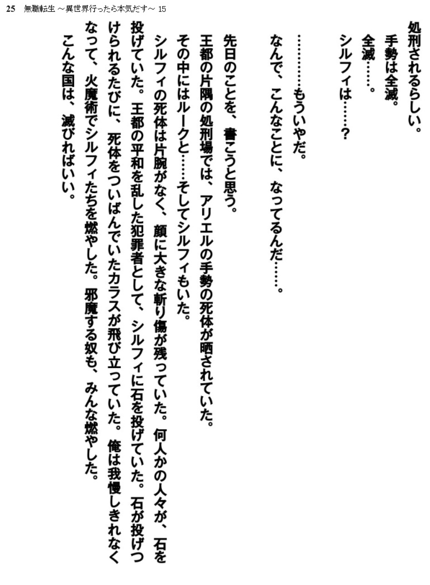

Oldeus only destroyed a part of Ars. Translation of the relevant parts from the LN -

"I wasn't able to endure it and burned sylphy's body with fire magic. Also those that were being a nuisance, I burned all of them. This country should just die/doesn't deserve to live"
A part of diary ends here. Next part opens with zanoba, there's nothing about destroying anything more. And he specifically mentions the extent of the damage he did.

"Seems like Asura kingdom doesn't know that I was the one who destroyed A PART of the capital"